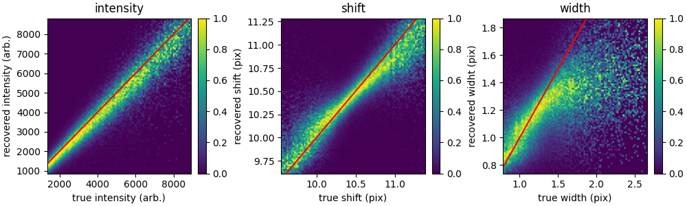

The EUV Snapshot Imaging Spectrograph (ESIS)

Top: optical layout of the ESIS instrument
Bottom: ESIS detector schematic
Scene orientation is fixed
Dispersion direction changes

4 / 15

He I 584 A
O V 630 A
Mg X 610 A
5 / 15
ESIS Inversions
Analogue of a tomographic inversion problem
Spatial/spectral ambiguity
Limited number of angles


7 / 15

Top: true-vs-reconstructed histogram for first three moments of the line profile using the 25% brightest pixels in validation dataset.
Right: Average validation spectrum (blue), average reconstructed spectrum (orange)

14 / 15